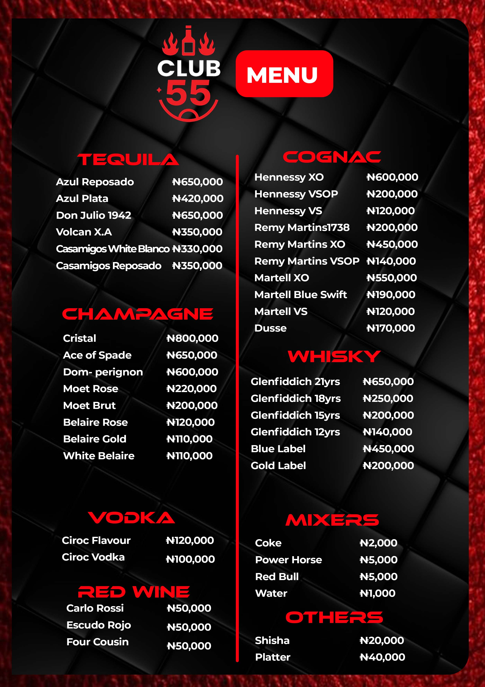

Company Profile
The company is incorporated to carry out software development, digital platform creation, and the provision of technology solutions for individuals and businesses across multiple sectors.
It operates as a technology company focused on building and managing digital solutions, tech infrastructure, and online platforms for commerce, education, and other industries.
MDJ FORGE LTD also provides ICT services, technology consulting, and the development of digital tools and platforms for business operations, customer engagement, and process automation.
Verification
Confirm the company record directly on the Corporate Affairs Commission public search portal.
Open CAC Public Search- Company Name: MDJ FORGE LTD
- RC Number: 8602324
- Registration Date: Jul 04, 2025
Objects of the Company
Business Objectives
A
To carry out the business of software development, digital platform creation, and provision of technology solutions for individuals and businesses across various sectors.
B
To operate as a technology company focused on building and managing digital solutions, tech infrastructure, and online platforms for commerce, education, and other industries.
C
To provide ICT services, tech consulting, and development of digital tools and platforms for business operations, customer engagement, and process automation.
D
To carry on the business of technology innovation, including software engineering, digital venture creation, and tech-based business support services.
Share Capital
The company is a private company limited by shares with a nominal share capital of ₦ 1,000,000 divided into 1,000,000 ordinary shares of ₦ 1 each.
CAC Certificate
Certificate Preview
Official CAC certificate for MDJ FORGE LTD in image and PDF format.
